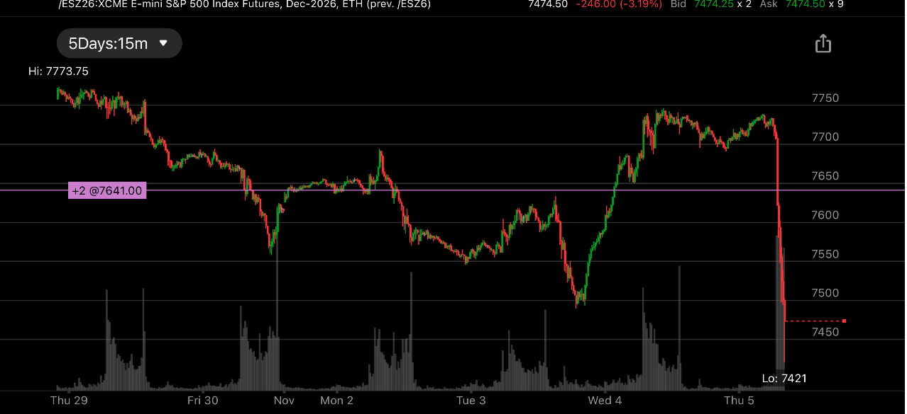
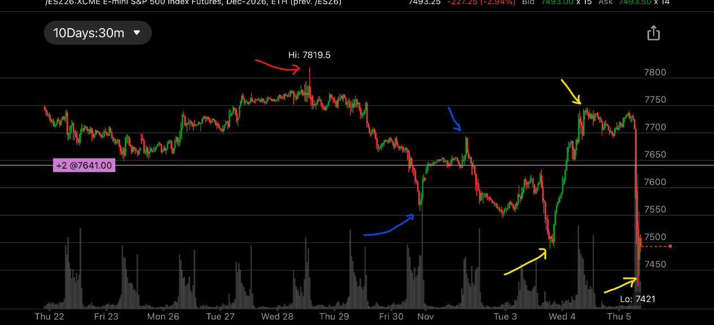
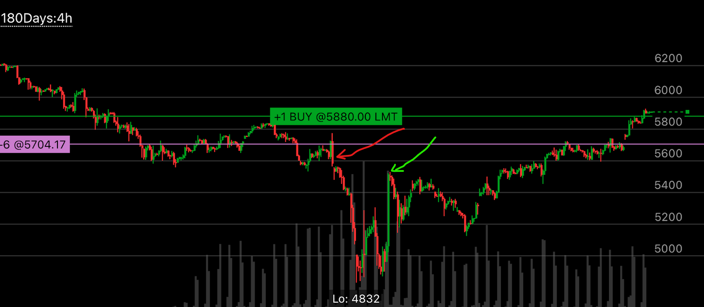
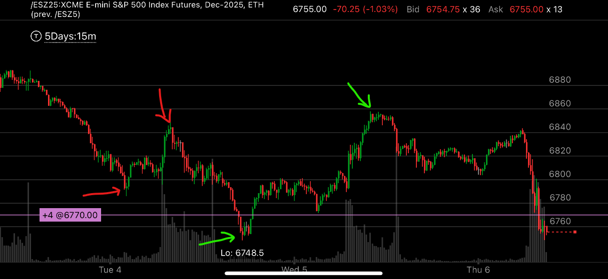
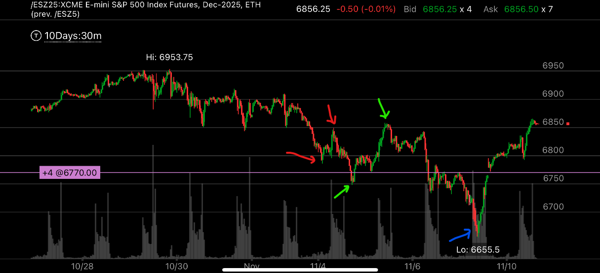
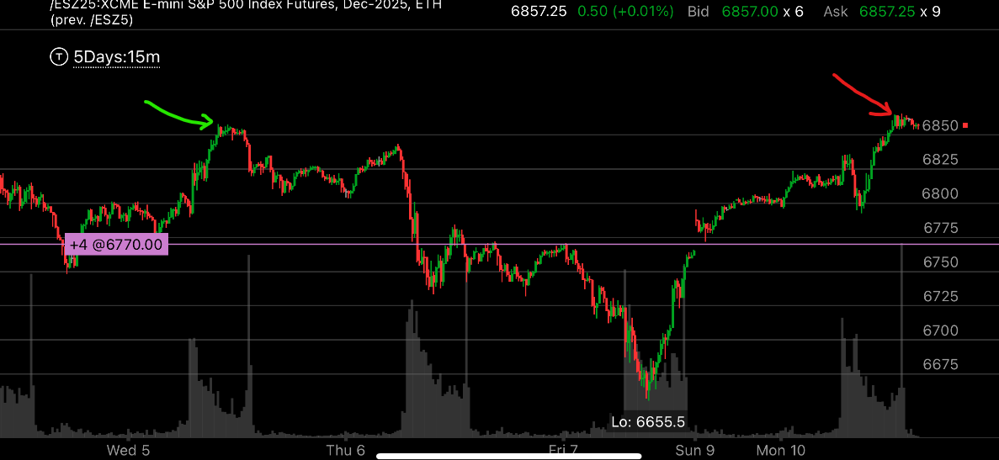
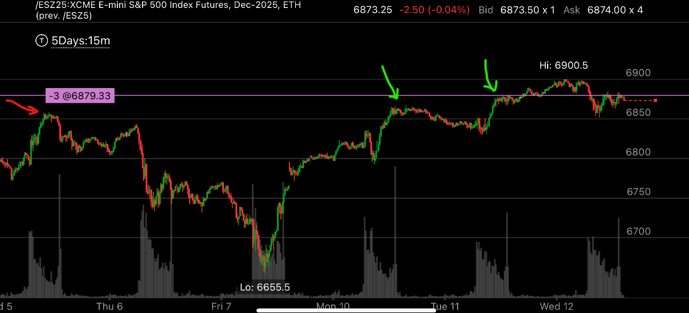
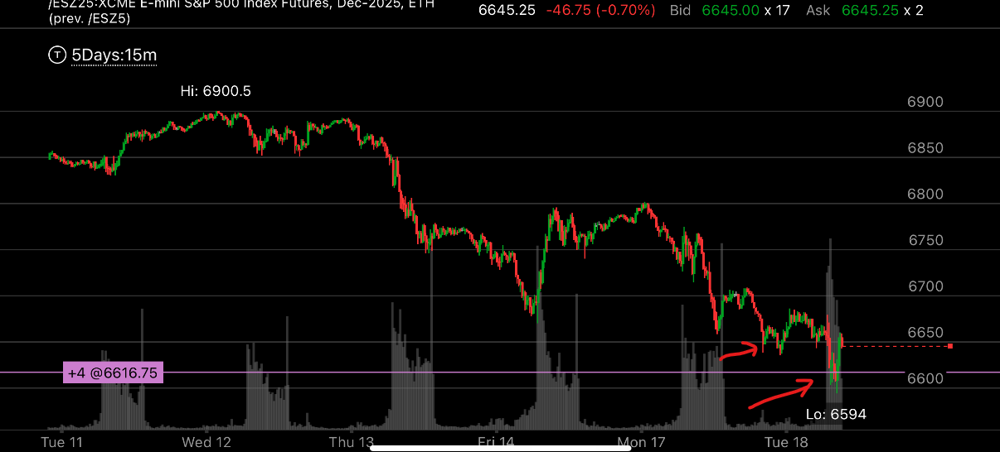

多重继续前进走势
- 这个走势有些类似继续前进走势，但是因为上涨速度太快，反而再次下挫，形成了多重前进走势。相当于一个复杂的变形走势
- 一定要分清，上涨中加速和上涨快的差别。上涨中的加速，是从最低点就开始算，超过上次的反弹高点，时间更短。 如果不是
这样，即使速度快，也不是加速，不会反转。


总体态势
- 红色箭头代表了前面的高点。
- 第一个蓝色箭头，是加速下跌。第二个蓝色箭头是短时间创高点后，大跌。
- 从第一个黄色箭头到第二个黄色箭头，显然出现了加速上涨。超过了前面的蓝色箭头高点，并且在高点徘徊很久。
它甚至还在前面蓝色箭头处反弹，说明它把这里当作一个关键点，和这里相关。这样，它未来一定下跌，低于第一个黄色箭头。
第三个黄色箭头说了这一点。

图示:
- 红色箭头，表示加速下跌
- 底部反弹，它虽然上涨很快，但是仔细观察。它并没有超过红色箭头的高点。这个高点是上次反弹的高点。所以这个不是加速上涨，它不会跌的更低。而是会震荡冲高。


总体态势
- 两个红色箭头，前面的尖锐走势
- 两个绿色绿色箭头，随后的抹平走势，这两个绿色箭头都在本地走平，其中高点走平时间更长，表示会下跌。
- 第二个绿色箭头后，它没有加速下跌，反而是减速下跌，这样，就走出了两段走势才结束。

它从底部反弹后，速度太快了。形成了加速上涨，红色箭头表示反弹的高点超过了前面下跌后反弹的高点。
而时间很短，这样就形成了加速上涨。

它超过前面的高点，也是采用了尖锐抹平走势。
红色是前面高点，第一个绿色超过红色，表示加速上涨实现了。然后拉回，第二个绿色箭头，表示确认超过了。也是一个抹平走势。这样就表示要下跌了。

图示：这个是后续下跌，它跌破了前面的低点，6655. 也是用尖锐/抹平走势。第一个红色箭头跌破后，拉回，
第二个红色箭头抹平，确认跌破了。